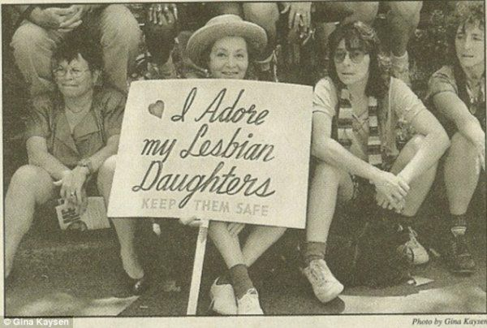
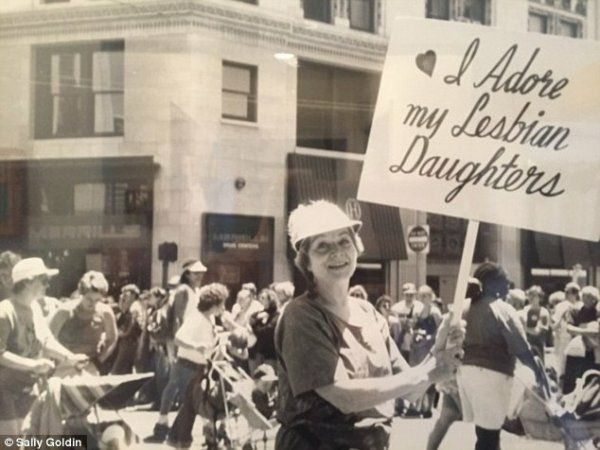
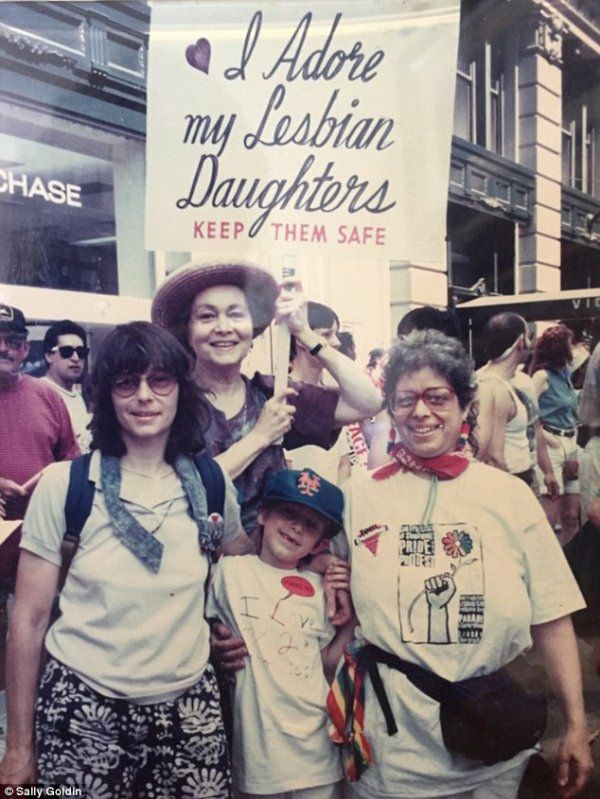
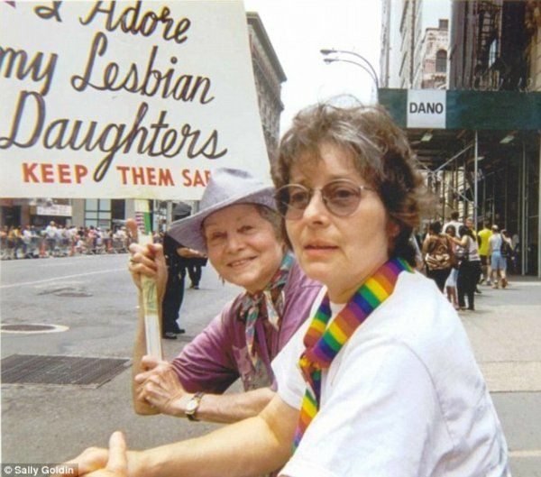
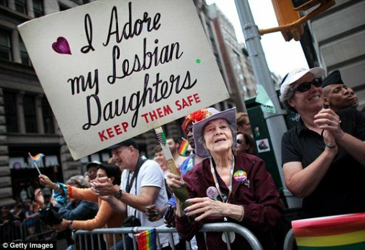
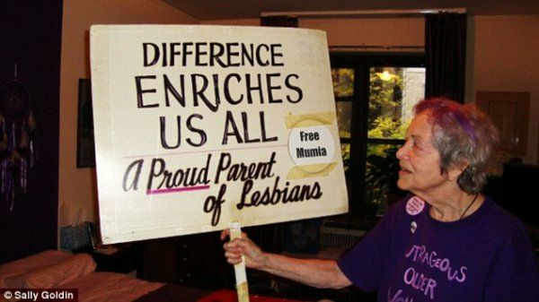
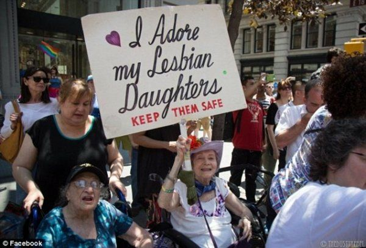

正文:
我觉得这位母亲才是她女儿最漂亮的朋友。（图片与文章均来源于煎蛋网） 这个今年92岁的老太太已经连续30多年接连参加各种游行，因为她要力挺自己的同性恋孩子。
在过去的几十年里，纽约同性恋游行的队伍里总能看到一张熟悉的脸，她总会举着一个写有：“我很爱我的同性恋女儿们，请不要伤害她们。”的牌子。
该女子就是同志权益维护者Frances Goldin，她的两个孩子——今年70岁的Sally和68岁的Reeni都在纽约1970年的第一次同性恋游行举办不久后出柜。Frances在接受采访的时候表示，自己从一开始就一直在参与“撑同志”的系列活动。
“这对我来说很重要，我也很庆幸自己可以每年参与到这项活动中。我现在92岁了，我希望我可以尽可能地多参加几次这个活动。”她说。
每一年的纽约同志游行，Frances都会如数参加，往往穿着紫色的衣服然后举着几十年力挺的同一个牌子。这个牌子是她的一个朋友做的，最初只有“我非常爱我的同性恋女儿们”，到了1993年的那次游行她才加上了“请不要伤害她们”这几个字样。而牌子的背面则写着：“一个为同性恋女儿们感到自豪的母亲。”
在过去的几十年里，人们慢慢注意到了这个特别的女子还有她手中的标语。1997年，华盛顿日报采访了她，她表示：“差异使这个世界更美好。”当时她已经有73岁高龄。
一般Frances都会与女儿们一起参加游行，但如果她们无法参加Frances还会邀请女儿的朋友们一同前往，并表示在那一天，那些女孩子们都是她的女儿。
Frances的小女儿Reeni表示：“我的妈妈相信平等和公正属于每个人。”
她的女儿们认为自己的母亲已经成为一个标志，很多得不到父母认可的同志们都很希望能有这么支持自己的母亲。而Frances不仅为同志举牌游行过，她还曾参与了占领华尔街运动。
“她为了支持我们被捕了10或11次。她表示自己做好了被捕12次的准备，但仍相信自己坚持的事是正确的。”Frances的女儿们表示。